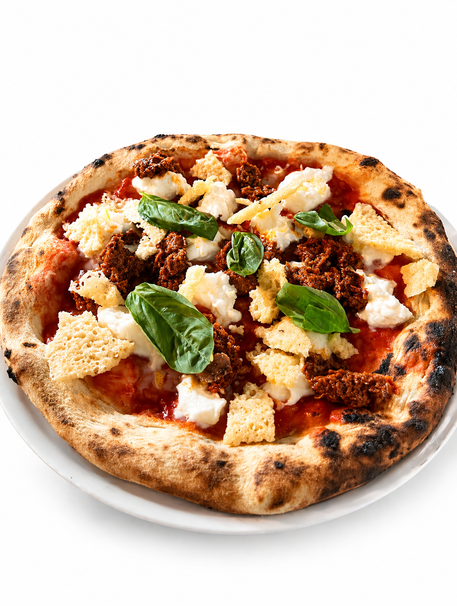
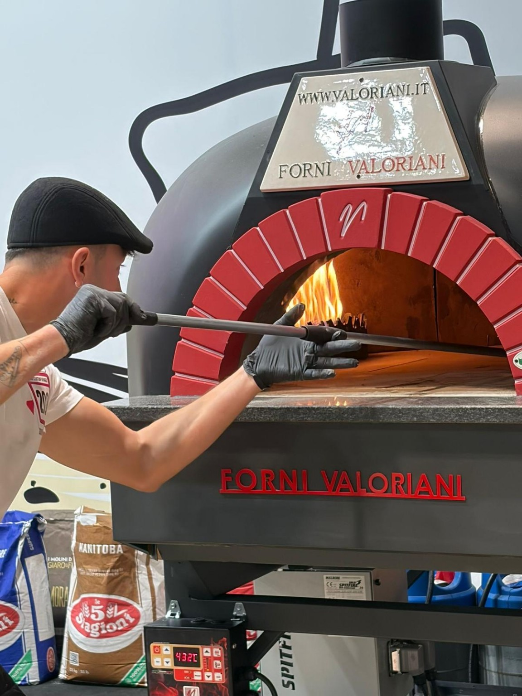

01
15,00 €Silvestre
San Marzano, búfala ahumada, limón, pesto rojo crujiente y Pecorino Romano.
Masa de larga fermentación, ingredientes italianos y horno de leña. Pizza napolitana hecha como debe ser, en Cazalla de la Sierra.
3 años consecutivos
entre las 50 mejores pizzerías de Europa
Cinco caminos para entrar en Rústica. Elige uno y deja que el horno haga el resto.

La pizza napolitana se entiende mejor cuando sobran las prisas. Fermentaciones largas, un horno que manda y una materia prima que no necesita esconderse detrás de nada.
Conoce nuestra historia →